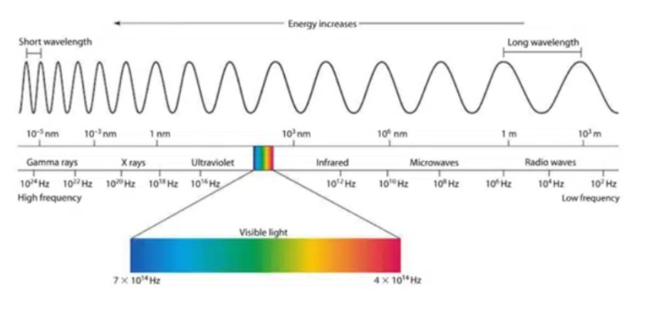

Question 1
Gravity is a force which tries to pull two objects toward each other. Anything which has mass also has a gravitational pull. The more massive an object is, the stronger its gravitational pull is. Earth’s gravity is what keeps you on the ground and what causes objects to fall. Gravity is what holds the planets in orbit around the Sun and what keeps the Moon in orbit around Earth. The closer you are to an object, the stronger its gravitational pull is. Gravity is what gives you weight. It is the force that pulls on all of the mass in your body.
Question 2
The following diagram represents the electromagnetic spectrum, which displays the range of energy from low energy, low-frequency waves to high energy, high-frequency waves in nanometers, and Hertz.
Question 3
Geologists classify rocks in three main categories: igneous, sedimentary, and metamorphic. Igneous rock forms when melted rock cools and hardens. Below ground, igneous rock forms when melted rock known as magma cools in small pockets. Above ground, igneous rock forms when volcanoes erupt and spew lava that cools and hardens into igneous rock. Sedimentary rock forms when minerals or organic particles accumulate and settle in a specific place on the Earth’s surface or within a body of water. Metamorphic rock forms when existing rocks are transformed by heat and pressure, and as a result experience profound chemical and physical changes. A student discovers a rock that he hypothesizes may be igneous.
Question 4
freezing temperatures of the Arctic habitat where they live. Natural selection is thought to be involved in the evolution of the Arctic fox’s thick coat of fur. Black fur emits more body heat to the colder surroundings than white fur does.
Question 5
To determine the best location in a greenhouse to grow seedlings, a gardener places seedlings in various locations. She puts 2 seedlings by a north-facing window, 2 seedlings by an east-facing window, and 2 in the center of the greenhouse. The gardener measures the height of each plant every 3 days. After 2 weeks, the gardener compares the growth of the plants in each location.
1. What is the hypothesis regarding gravity and mass of the object?
2. The given information supports which of the following hypothesis?
3. Which of the following supports the student’s hypothesis?
4. Which of the following does NOT support the hypothesis that having white fur would be a survival advantage for the Artic fox?
5. Identify the gardener’s hypothesis.